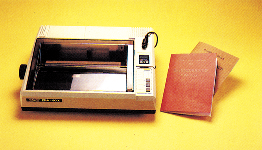
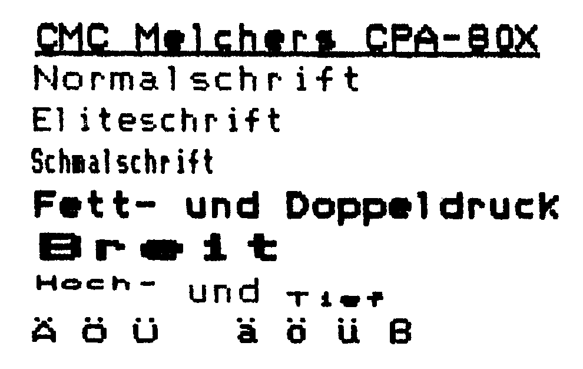

CRA-80X — der vielseitige Drucker
Commodore- und Standard-ASCII-Zeichensatz, ohne Interface direkt an den C 128 und den C 64 anschließbar, damit glänzt der CPA-80X.
Die Bremer Firma Melchers bietet Drucker aus japanischer Produktion in ihrer CP- und CPA-Reihe an. Den Zusatz »X« in der Bezeichnung erhalten die Geräte, wenn sie eine serielle IEC-Schnittstelle der Commodore-Computer aufweisen. Einen Drucker dieser Bauart haben wir an den C 128 sowie den C 64 angeschlossen und in der harten Redaktionspraxis getestet.
Entscheidend beim Druckerkauf ist, ob das in Frage kommende Gerät mit den für den eigenen Computer verfügbaren Programmen zusammenarbeit und den vom Computer am Bildschirm dargestellten Zeichensatz auch ausdrucken kann. Erst wenn diese Voraussetzungen erfüllt sind, kann man daran gehen und die technischen Eigenschaften vergleichen. Der CPA-80X (Bild 1) ist voll auf die Arbeit am C 64 oder C 128 zugeschnitten. Der Drucker beherrscht die Steuerzeichen der Commodore-Drucker MPS-801, MPS-802 und MPS-803 und ermöglicht es, Programme zu nutzen, die für diese Drucker geschrieben wurden. Daneben versteht und verarbeitet er die weit zahlreicheren Befehle, die von Epson und anderen ASCII-Druckern verwendet werden (ESC/P-Standard). Damit können zum Beispiel für Epson-Drucker geschriebene Routinen zum Ausdruck hochauflösender Grafik verwendet werden.

Die Inbetriebnahme und der Anschluß des CPA-80X an den Computer ist wirklich leicht. Schnittstellenkabel in den Anschluß der Floppy, Netzkabel in die Steckdose, Farbband und Papier einlegen, einschalten und schon kann gedruckt werden. Die unter einer Abdeckung an der Druckeroberseite sehr leicht zugänglichen DIP-Schalter sind bereits für den Betrieb am C 128 voreingestellt. So kann der Einsteiger sofort mit der Arbeit beginnen, dem Fortgeschrittenen stehen zahlreiche Anwendungsmöglichkeiten offen.
Gute Ausstattung
Der Drucker verarbeitet sowohl Endlos- wie Einzelblattpapier. Der für den Transport von Endlospapier benötigte Traktor ist im Lieferumfang enthalten. Hervorzuheben ist, daß der CPA-80X einen Schubtraktor zum Transport des Randlochpapiers einsetzt. Dabei befinden sich die Stacheln zum Papiertransport hinter der Walze und dem Druckkopf. Das Ergebnis ist, daß im Gegensatz zu Systemen mit Zugtrakor bereits das erste eingespannte Blatt bedruckt werden kann und nach dem Druck kein Blatt verloren geht. Unterstützt wird dies von einer ausreichend scharfen Papierabreißkante. Das etwa fünf Kilogramm schwere Gerät macht einen soliden Eindruck. Die Ausstattung mit einem verwindungssteifen Metallboden und Hartplastikgehäuse trug sicher dazu bei, um während des Tests auch im Dauerbetrieb keine Störungen auftreten zu lassen. Das übersichtliche Bedienungsfeld mit drei Drucktasten für On/Off Line, Line Feed und Form Feed sowie vier LED-Anzeigen, erleichtert das Arbeiten. Der auf zwei Schienen exakt geführte Druckkopf funktionierte im Test einwandfrei und zeigte keine Überhitzungserscheinungen. Bei normaler Papierstärke werden ein Original und zwei Durchschläge verkraftet.
Der CPA-80X ist vielseitig und verwandlungsfähig wie ein Chamäleon. Die Auswahl der verschiedenen Druckermodi und Zeichensätze kann sowohl über gut zugängliche DIP-Schalter als auch über zahlreiche Steuerbefehle erfolgen. Die Druckertypen CP-80X (Vorgänger-Modell), MPS 802/CBM 1526, MPS 801/MPS 803 sowie Epson/ Taxan/C. Itoh/Standard ASCII werden über die Stellung der DIP-Schalter 5 und 6 selektiert. Je nach Schalterstellung verhielt sich unser Testgerät tatsächlich so, als sei es einer dieser Druckertypen. Alle Befehle der entsprechenden Drucker wurden verstanden und verarbeitet. Über fünf weitere Schalter können insgesamt 23 unterschiedliche Zeichensätze ausgewählt werden. Neben der Geräteadresse (4 bis 7) können weitere Funktionen über die DIP-Schalter eingestellt oder verändert werden. Eine andere Möglichkeit zur Steuerung dieses Druckers besteht über die Software mittels Steuerbefehlen.
Der CPA-80X versteht sowohl die bei Commodore-Druckern verwendeten Befehle als auch die von Epson und Kompatiblen eingesetzten Escape-Befehle. Aus der Vielzahl der Eigenschaften greifen wir einige Fähigkeiten heraus: Vertikal- und Horizontal-Tabulator, variabler Zeilenabstand, Schrifttypen wie Pica, Elite, Klein-Breit-, Fettschrift, Doppeldruck, Hoch-, Tiefstellen, Unterstreichen, Grafikmodus mit einfacher und doppelter Dichte. Leider fehlt der inzwischen fast selbstverständliche Schönschriftmodus (NLQ). Obwohl das Schriftbild einen guten Eindruck macht (Bild 2 und 3), eignet sich der Drucker damit weniger für qualitative Korrespondenz. Dies ist um so bedauerlicher als der Drucker sich leicht auf das weit verbreitete und häufig eingesetzte Textverarbeitungsprogramm Vizawrite 64, aber auch auf Master-Text problemlos einstellen läßt.

Für Geschwindigkeitstests setzen wir unseren festgelegten Probetext ein. Dieser wurde vom CPA-80X in 3:26 Minuten zu Papier gebracht. Eine weitere Messung ergab bei der Ausgabe von 80 Zeichen/Zeile in der Minute 53 Zeilen, das sind 4240 Zeichen/Minute oder 70 Zeichen in der Sekunde. Die weiteren technischen Einzelheiten sind in der Tabelle aufgeführt.
Paßt in die Commodore-Welt
Für den Betrieb am C 64 oder C 128 ist der CPA-80X bestens geeignet. Der Drucker ist direkt an die Commodore-Computer anschließbar. Damit entfallen Kosten von etwa 200 Mark für den Kauf eines zusätzlichen Interfaces. Zwei Handbücher klären alle Anwenderfragen. Eine der Anleitungen enthält zahlreiche Programmbeispiele im C 128-Modus. Der CPA-80X druckt die Commodore-Grafikzeichen, beherrscht den DIN-Zeichensatz des C 128 sowie zahlreiche nationale Zeichensätze, wie zum Beispiel griechisch oder japanisch, und ist voll grafikfähig. Der empfohlene Richtpreis von 898 Mark ist für diese Leistungen, bei denen einzig die NLQ-Schrift fehlt, sicherlich ein Angebot, das das Prädikat »preiswert« in seiner besten Bedeutung rechtfertigt.
(Erich Tassoti/aw)Info: Melchers, 2800 Bremen 1, Schlachte 39/40